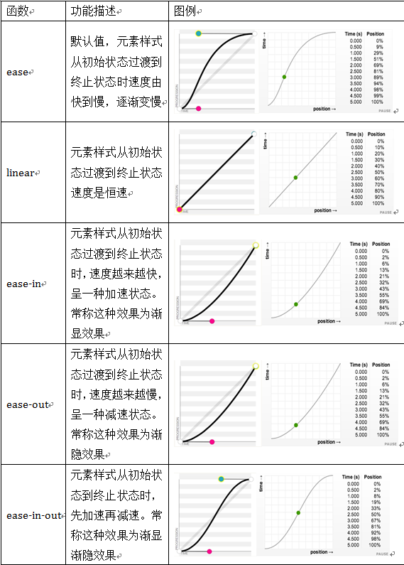
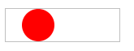

语法：
@keyframes 动画名
{
0%
{
……
}
……
100%
{
....
}
}
a1{
animation:动画名 持续时间 过渡类型 动画延迟时间 循环次数 是否方向运动 ;
}
说明：
css3动画效果由3大部分组成：变形（transform）、过渡（transition）和动画
上面的0%表示动画的开始，100%表示动画的结束，中间还可以有很多的百分比。如果只有0%和100%可以用to..from来代替
animation-name：动画名称
animation-duration：持续时间
animation-timing-function：动画过渡类型
animation-delay：延迟的时间
animation-iteration-count：循环次数
animation-direction：是否反向运动
animation-timing-function：取值

animation-iteration-count：取值
| 属性值 | 说明 |
|---|---|
| 正整数 | 默认值1(播放一次)，可以1.。。n，n表示动画播放n次 |
| infinite | 无限次地循环播放 |
animation-direction：取值
| 属性值 | 说明 |
|---|---|
| normal | 每次循环都向正方向播放（默认值） |
| reverse | 每次循环都向反方向播放 |
| alternate | 播放次数是奇数时，动画向原方向播放；播放次数是偶数时，动画向反方向播放 |
使用方法：
animation:myanimation 2s ease-out 2s
兼容性：
- 浅绿 = 支持
- 红色 = 不支持
- 粉色 = 部分支持
| 支持版本\类型 | IE | Firefox | Safari | Chrome | Opera |
|---|---|---|---|---|---|
| 版本 | 6-9 | 4 | 5.1.7 | 13-23 | 11.5-11.6 |
| 版本 | 10 | 5-18 |
橘色说明要加浏览器的前缀
事例：
红球无限循环左右滚动
@-moz-keyframes mytranslate{
0%{}
100%{-moz-transform:translateX(100px)}
}
#div1{
width:40px;
height:40px;
border-radius:20px;
background-color:red;
-moz-animation:mytranslate 2s linear alternate infinite;
}
